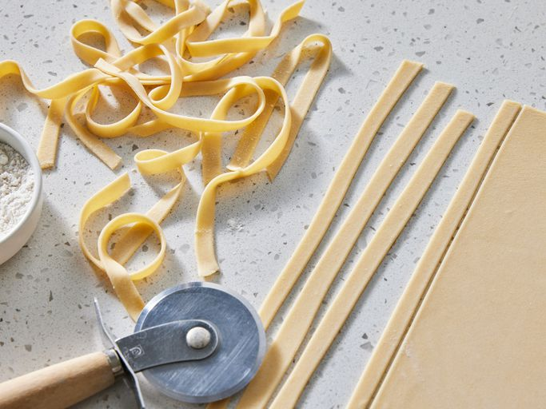

Home
Recipe for Pasta

Image credit: Dotdash Meredith Food Studios
Description
Ingredients
- 1 cup all-purpose flour
- 1/2 teaspoon salt
- 1 egg, beaten
- 2 tablespoons water (Optional)
Steps
- Gather all ingredients.
-
Combine flour and salt in a medium bowl. Make a well in the center and
add beaten egg. Mix well until a stiff dough forms, adding up to 2
tablespoons water if needed.
-
Knead dough on a lightly floured surface until smooth, 3 to 4 minutes.
Wrap dough and let rest for 30 minutes to 1 hour.
-
Roll dough by hand or with a pasta machine to desired thickness, then
cut into strips of desired width and length.
Original recipe from "Basic Homemade Pasta" by Pat